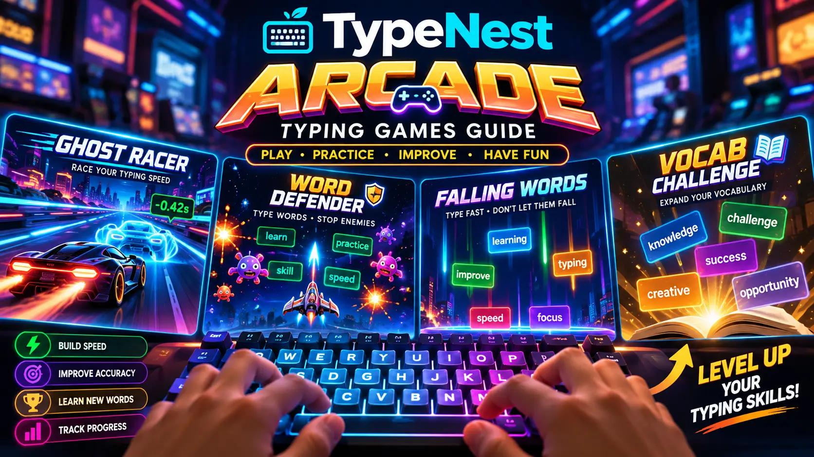
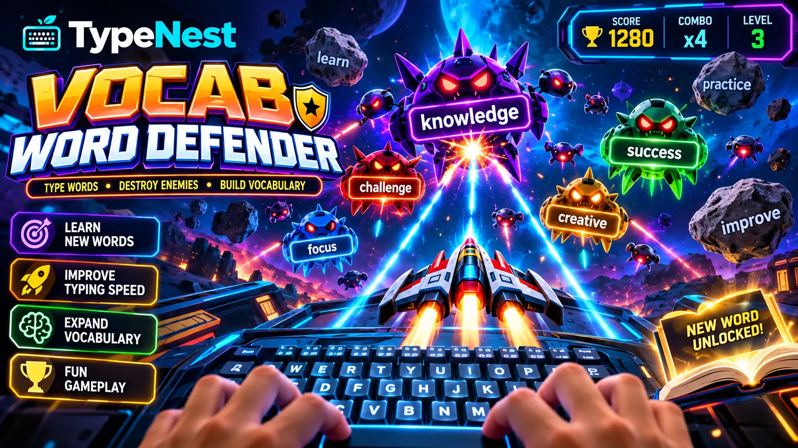
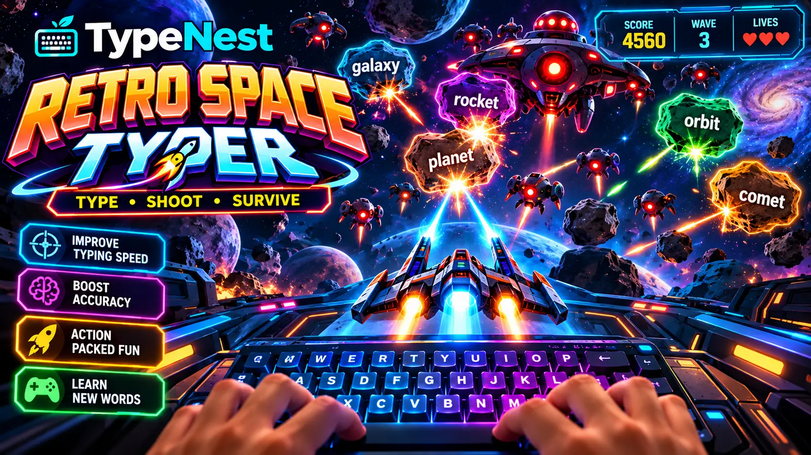
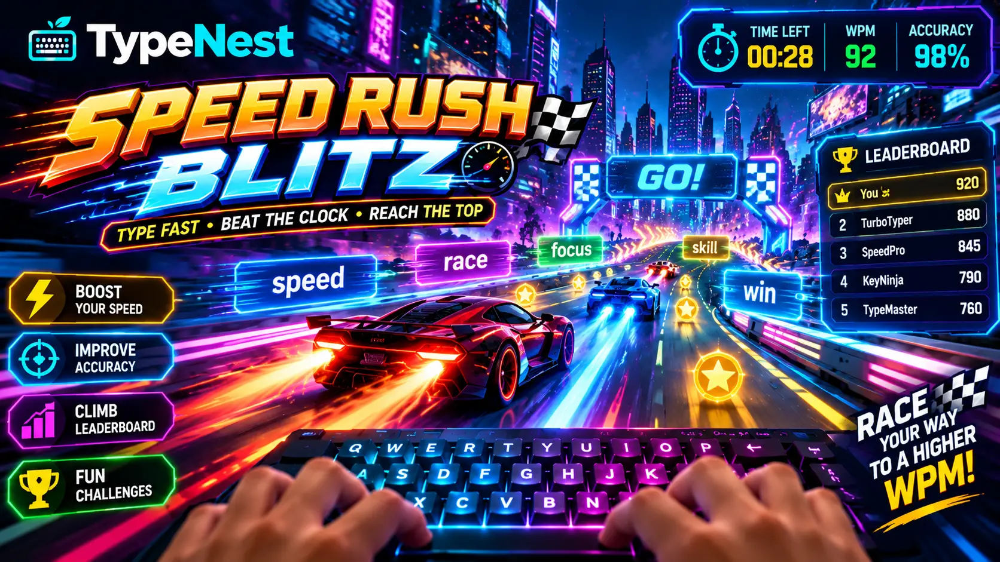
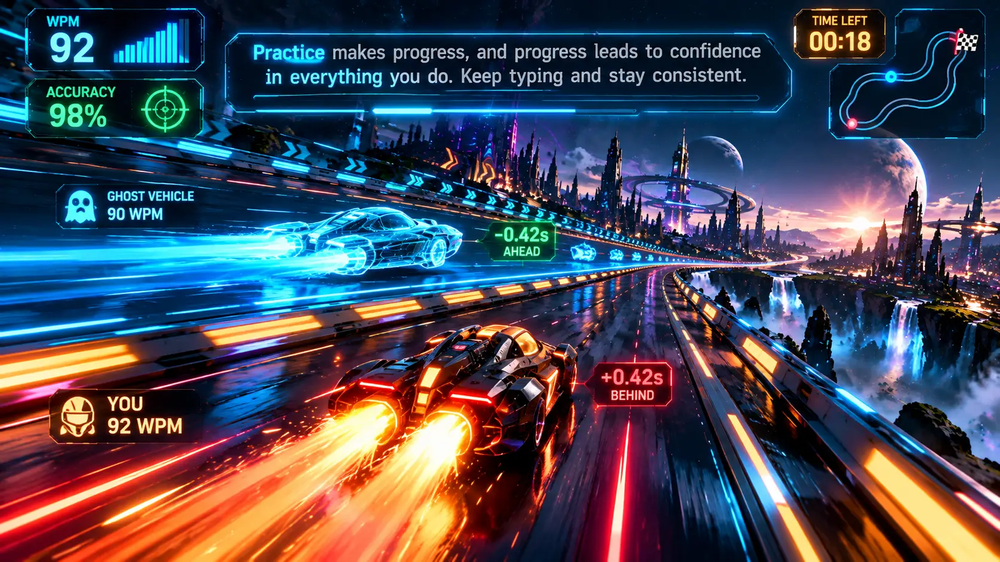

TypeNest Academy · Arcade Hub
TypeNest Arcade: A Complete Guide to Four Typing Games for Speed, Accuracy and Practice
Published 4 October 2026 · 14 min read

Learning to type and practising typing are two entirely different jobs[cite: 1]. Learning is about technique: where your fingers rest, which finger owns which key, and how to stop hunting for letters[cite: 1]. Practising is the repetition that turns that technique into an unconscious motor habit. Repetition is also where many learners drift away, because drilling the same repetitive word lists rarely feels exciting.
That gap is the exact reason typing games exist, and it is the philosophy behind TypeNest Arcade, a suite of four browser-based typing games built to sit beside TypeNest's structured typing curricula[cite: 1]. No game will make anyone an elite typist on its own, and this guide does not claim otherwise. What a well-crafted game does is give you an engaging reason to keep your hands anchored to the keyboard and apply what you have learned under mild, gamified pressure.
What Is TypeNest Arcade?
TypeNest Arcade brings four distinct typing game mechanics into a single accessible portal. The hub lets you choose your challenge while displaying a local personal dashboard: your all-time peak WPM, high score, total sessions completed, and individual milestone records[cite: 5, 12].
One architectural detail is worth knowing upfront: all arcade records are stored locally in your browser (localStorage)[cite: 12]. That means your high scores remain private, instant, and saved without demanding a mandatory login popup or credit card barrier[cite: 1]. You are competing with your own previous records. Used correctly, you learn keyboard ergonomics through our Structured Courses, test benchmarks via Timed Speed Tests, and reinforce speed with Arcade sessions[cite: 1, 5].
The Four Games at a Glance
| Game | Core Idea | Primary Focus | Game Style |
|---|---|---|---|
| Vocab Word Defender | Stop falling words before the bottom line | Accuracy, English-Marathi vocabulary[cite: 11] | 25 levels, combo multiplier, 3 hearts |
| Retro Space Typer | Shoot alien ships by typing words | Target acquisition, rapid reactions | Endless survival waves, mothership bosses |
| Speed Rush (60s) | Clear maximum words in one minute | Velocity sprints, unbroken streaks | 60s ring timer, zero fail state |
| 1v1 Ghost Racer | Race against your own fastest replay | Cadence consistency on full prose | Three fixed tracks, real-time delta timing |
1. Vocab Word Defender
Vocab Word Defender is a sky-defence strategy game where English words drift downwards across the arena. Each target word is displayed with its phonetic pronunciation and regional Marathi meaning, combining tactile spelling drills with cognitive language acquisition[cite: 11]. Your objective is to eliminate each word before it crosses the danger line at the base of the arena.

How the Game Works
Pressing any starting letter locks your targeting crosshair onto a matching word. If multiple words share the same letter, the engine automatically prioritizes the lowest, most urgent threat. Once locked, you finish typing the word letter by letter to destroy it with an explosion animation.
You begin with three hearts. Every word that breaches the red baseline costs one heart and breaks your combo counter. Scoring scales with word length, multiplied by a progressive combo bonus (×1.2 at three words, ×1.5 at six, and ×2.0 at twelve). The game features 25 structured levels, and unlocking each tier saves your checkpoint directly in your browser[cite: 12]. For a more deliberate educational experience, pair this with the TypeNest Vocab Arena[cite: 8].
2. Retro Space Typer
Retro Space Typer adapts classic shoot-'em-up arcade action to keyboard training. Descending alien invaders carry individual words. Typing the correct sequence fires laser beams from your defender turret, destroying the enemy craft before they breach your shield barrier.

How the Game Works
Each wave spawns a fleet of ships. Typing the initial letter locks your turret onto that vessel. When an entire wave is eliminated, the next begins with increased flight speed, denser formations, and longer words. Every fifth wave summons a Mothership with a dedicated shield bar requiring three sustained, high-syllable words in a row to defeat.
Mistyped keys count against your final accuracy rate but do not consume shield lives, making this mode more forgiving of typos than Defender. If you accidentally lock onto the wrong target, tapping Escape immediately resets your crosshairs so you can retarget the closest ship[cite: 3, 5].
3. Speed Rush (60s Blitz)
Speed Rush is a pure one-minute velocity sprint. A single target word sits centered on screen with its Marathi meaning below and a dynamic countdown timer circling the arena[cite: 11]. It offers a quick, high-intensity warmup before work or speed testing.

How the Game Works
Following a 3-second countdown, words appear continuously from a randomized pool, with upcoming words previewed below. There are no hearts or fail states: typos do not end the game, but they immediately reset your multiplier streak to zero. Typing five flawless words unlocks Overdrive (×1.5 score boost), while ten flawless words activates Blitz Mode (×2.0 score boost).
At the 60-second mark, the engine calculates gross keystrokes divided by five to display your official WPM, accuracy, and assigned typist rank (from Rookie up to Legend)[cite: 3, 5].
4. 1v1 Ghost Racer
Ghost Racer brings competitive time-trial racing to connected typing. Instead of isolated words, you type continuous narrative prose while a semi-transparent ghost vehicle races alongside your pod in the parallel lane.

How the Game Works
You choose between three tracks: Neon Loop, Rain Circuit, and Legend Run. During the sprint, the ghost vehicle plays back your own personal record on that track. If you have not recorded a run yet, an adaptive pacing bot sets a target speed based on your historical benchmark[cite: 4].
A live HUD indicator shows whether you are split-seconds ahead or lagging behind your benchmark ghost. Spaces between words are inserted automatically upon finishing each word, allowing you to train unbroken forward momentum on connected sentences. If you struggle with cadence on prose, combine this with our 15-Minute Daily Typing Routine[cite: 2].
How Typing Games Differ from Lessons and Tests
Lessons teach technique[cite: 1]. Tests measure benchmark performance under standardized conditions[cite: 5]. Games apply those habits in a dynamic setting with reactive pressure. They serve complementary roles: a game score measures arcade scoring rules, not formal typing certifications[cite: 3, 5]. If your fingers stumble during arcade sessions, revisit our Difficult Words Drills to smooth out mechanical hesitation[cite: 1].
Recommended Routine with TypeNest Arcade
- Step 1 — Calibration Warmup (3 Mins): Run 2 minutes on the Typing Arena to wake up your fingers[cite: 2, 3].
- Step 2 — Velocity Sprint (2 Mins): Complete two rounds of Speed Rush to accelerate keystroke throughput[cite: 1].
- Step 3 — Accuracy Reinforcement (10 Mins): Clear 3 to 4 stages of Vocab Word Defender, prioritizing unbroken combos[cite: 1].
- Step 4 — Rhythm Match (5 Mins): Close your workout with 1v1 Ghost Racer to evaluate your cruising speed against your ghost vehicle.
Frequently Asked Questions
What is TypeNest Arcade?
TypeNest Arcade is a free browser-based suite of four interactive typing games: Vocab Word Defender, Retro Space Typer, Speed Rush (60s Blitz), and 1v1 Ghost Racer, designed to build keyboard speed, accuracy, and vocabulary[cite: 1].
Are all TypeNest Arcade games free?
Yes. Every game is 100% free with no paywalls, hidden microtransactions, or mandatory subscriptions[cite: 1].
Do I need to sign up for an account to play?
No. All game records, high scores, and level checkpoints are automatically saved to your local browser storage[cite: 12]. You can optionally sign in with Google to sync your stats to TypeNest Cloud[cite: 4, 12].
Can typing games replace formal typing courses?
No. Games reinforce reaction speed and stamina, but they do not teach finger-to-key anchoring or ergonomic posture[cite: 1]. Beginners should always start with the Beginner Touch Typing Course before relying on games[cite: 1].